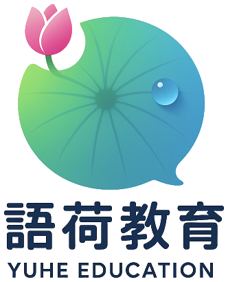

I'm Kathryn To. I teach Chinese — to children, to adults, to schools, and to companies whose teams work with Mainland China.
From first words to confident conversation. One-to-one, small groups, in person or online — for children, for adults, and for complete beginners who have never studied a tone language before.
Voice, delivery and stage presence. Competition coaching, school programmes, and training for anyone who has to stand up and speak in front of people.
Chinese-language drama for young people — building confidence, expression and ensemble work through performance.
Practical Mandarin for teams who deal with Mainland China: the phrases you actually use, the tone that works, and how not to be misunderstood.
For adults
A practical route into spoken Cantonese — for work, for family, or for daily life in Hong Kong.
For adults who have never studied a tone language. Speaking first, characters later.
For professionals and teams dealing with Mainland China — calls, meetings, hosting, small talk.
For children & teenagers
Play-based Cantonese for young learners growing up in a Cantonese-speaking city.
A fast pronunciation course — the sounds, the tones, and the habits that make you understood.
Solo and choral recitation, Speech Festival coaching, and speaking clearly in front of a room.
Presenting, hosting and holding a stage — for primary-age children who like to be heard.
Ensemble performance for young people: voice, body, expression and working with others.
Festivals, stories, poetry and food — a course that grows a child's sense of where they come from.
Short, intensive preparation for K3 children facing Primary 1 interviews — local and international schools.
Corporate Mandarin programmes for organisations including Kodak, Nike, Rémy Martin, Equity Trust and Emperor Group — plus in-house programmes for banks, insurance and finance firms, and for international schools.
Most of my corporate students were not Chinese speakers — total beginners, with some progressing to intermediate level. I've spent twenty years teaching adults who start with nothing but willingness.
As an employee, I've also run Mandarin training for my own colleagues — at Caring International and at the English Schools Foundation office.
For companies
A practical session built around your team's real situations — calls, meetings, hosting, small talk. No textbook, no grammar drills.
For schools
Course design, level frameworks, and teacher development — from a coordinator who has built a six-level curriculum and taught the teachers too.
For students
Solo and choral training by a festival judge. Voice, pacing, expression — and what the adjudicators are actually listening for.
For anyone
A first taste for absolute beginners. No grammar, no textbooks, no homework. We start speaking in the first minute.
Workshop
Friday 30 October, morning · Wan Chai
For absolute beginners, and for anyone who tried once and gave up. Come and make some sounds with a room full of people who are also starting from zero. Email me to register your interest.